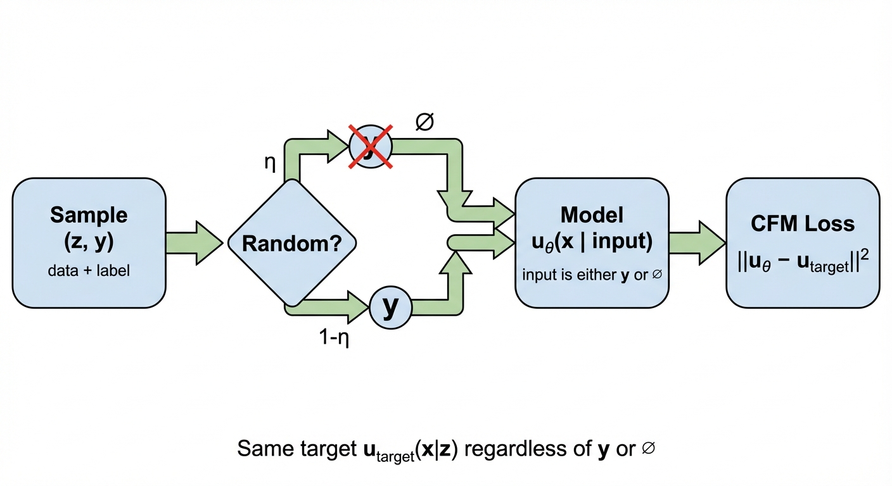
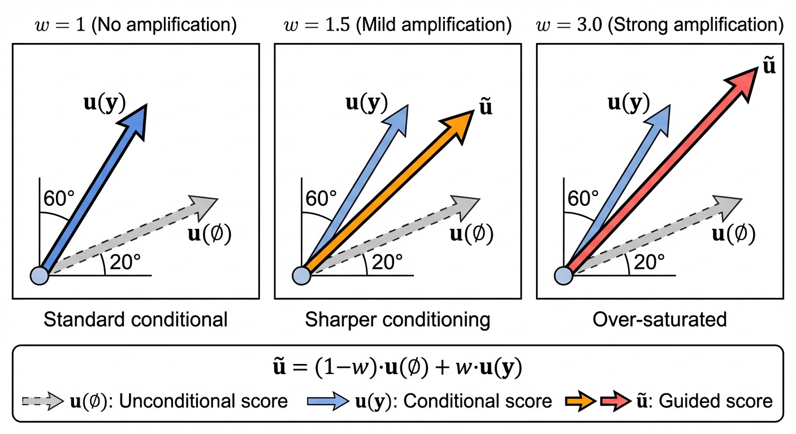

Diffusion & Flow Matching Part 8: Guided Generative Models
- Guided generation conditions the model on additional information \(y\) (e.g., text prompts, class labels)
- CFG training: Standard loss + randomly drop conditioning with probability \(\eta\) (10-20%)
- CFG sampling: Amplify conditioning by extrapolating: \(\tilde{u}_t = u_t(\emptyset) + w \cdot (u_t(y) - u_t(\emptyset))\)
- For Gaussian paths, CFG = amplifying the classifier gradient; for general flows it’s purely empirical
So far, the generative models we have discussed are all unconditional models, i.e., they generate samples from the target probability distribution \(p_{data}\) without any additional information. In this post, we will discuss how to make these models conditional on some additional information like a text prompt \(y\).
To avoid notation and terminology clash with the use of the word “conditional” to refer to conditioning on \(z \sim p_{data}\), we will use the term “guided” to refer specifically to conditioning on \(y\).

Def: Guided Generative Model
A guided diffusion model is defined by the SDE:
\[ \begin{aligned} dX_t &= [u_t^{target}(X_t | y) + \frac{\sigma_t^2}{2} \nabla \log p_t(X_t | y)] dt + \sigma_t dW_t \\ X_0 &\sim p_{init} \\ \implies X_t &\sim p_t(\cdot | y) \quad \text{for all } 0 \leq t \leq 1 \end{aligned} \]
When \(\sigma_t = 0\), the SDE reduces to the ODE for guided flow matching: \[ dX_t = u_t^{target}(X_t | y) dt, \quad X_0 \sim p_{init} \]
Guidance for Flow Models
Now let us imagine we have a label \(y\) for each data \(z\). For images, some of them are “dog” and some of them are “cat”. Given a fixed label \(y\), we can think of \(p_{data}(z | y)\) as a “slice” of the data distribution — the subset of data points with that label.
Given a fixed label \(y\), the CFM loss is defined as before:
\[ L_{CFM, y}(\theta) = \mathbb{E}_{t, z \sim p_{data}(z|y), x \sim p_t(x|z)} \left[ \|u_t^\theta(x | y) - u_t^{target}(x | z)\|^2 \right] \]
The target \(u_t^{target}(x | z)\) is exactly the same as in unconditional flow matching (see Part 3): the vector field that transports noise toward data point \(z\). For Gaussian paths with \(x = \alpha_t z + \beta_t \epsilon\):
\[ u_t^{target}(x | z) = \dot{\alpha}_t z + \dot{\beta}_t \epsilon \]
How does training on \(u_t^{target}(x|z)\) give us \(u_t^{target}(x|y)\)? This is the marginalization trick again. The key insight is:
\[ u_t^{target}(x | z, y) = u_t^{target}(x | z) \]
Why? Because the probability path \(p_t(x|z)\) only depends on \(z\) — once you know the specific data point \(z\), the label \(y\) provides no additional information about how to add noise to it. The noise-adding process is purely mechanical and doesn’t care about labels.
Therefore, the marginalization formula from Part 4 applies directly:
\[ \begin{aligned} u_t^{target}(x | y) &= \mathbb{E}_{z \sim p_t(z|x,y)}[u_t^{target}(x | z, y)] \\ &= \mathbb{E}_{z \sim p_t(z|x,y)}[u_t^{target}(x | z)] \end{aligned} \]
What does this mean? Given noisy sample \(x\) and label \(y\), the marginal vector field is an average over all possible clean data points \(z\) that could have generated \(x\), weighted by the posterior \(p_t(z|x,y)\). The label \(y\) constrains which \(z\) values are plausible, but once a specific \(z\) is chosen, the vector field \(u_t^{target}(x|z)\) is the same regardless of \(y\).
We never compute this expectation explicitly — least-squares regression does it for us (see Part 6). By sampling \((z, y) \sim p_{data}(z, y)\) and regressing against \(u_t^{target}(x|z)\), the model learns \(u_t^\theta(x|y) \approx u_t^{target}(x|y)\).
You can think of \(u_t^\theta(x | y)\) as a specific model just for the data slice \(p_{data}(z|y)\) with label \(y\). We could build separate models for each label \(y\) and train them separately, but this is not efficient. Instead, we want to train a single model that works for all \(y\), so the model takes input \([x, y, t]\) instead of only \([x, t]\) as before.
Now, we want to minimize the expected loss over all possible labels \(y\). The total loss is the expectation of the label-specific losses \(L_{CFM, y}\):
\[ \begin{aligned} \mathcal{L}_{CFM}(\theta) &= \mathbb{E}_{y \sim p_{data}(y)} \left[ L_{CFM, y}(\theta) \right] \\ &= \mathbb{E}_{y \sim p_{data}(y)} \left[ \mathbb{E}_{t, z \sim p_{data}(z|y), x \sim p_t(x|z)} \left[ \|u_t^\theta(x | y) - u_t^{target}(x | z)\|^2 \right] \right] \\ &= \mathbb{E}_{t, y \sim p_{data}(y), z \sim p_{data}(z|y), x \sim p_t(x|z)} \left[ \|u_t^\theta(x | y) - u_t^{target}(x | z)\|^2 \right] \end{aligned} \]
By the definition of joint probability: \[ p_{data}(z, y) = p_{data}(z | y) \, p_{data}(y) \]
we can merge these two expectations into one:
\[ \mathbb{E}_{y \sim p_{data}(y), z \sim p_{data}(z | y)} = \mathbb{E}_{(z, y) \sim p_{data}(z, y)} \]
Substituting back, we get:
\[ \mathcal{L}_{CFM}(\theta) = \mathbb{E}_{t,(z,y) \sim p_{data}(z, y), x \sim p_t(x|z)} \left[ \|u_t^\theta(x | y) - u_t^{target}(x | z)\|^2 \right] \]
In practice, sampling \((z, y) \sim p_{data}(z, y)\) would involve a dataloader that returns batches of both \(z\) and \(y\).
The Problem: Weak Conditioning
While the above training procedure is theoretically valid, it was empirically observed that images generated with this procedure did not fit well enough to the desired label \(y\). The generated samples were correct on average, but lacked the strong conditioning that users wanted.
Both Classifier Guidance and Classifier-Free Guidance (CFG) are sampling-time techniques. The idea is the same: scale up the “conditioning direction” to get stronger adherence to the label \(y\).
The derivations below show why this works mathematically. The difference between the two methods is how you compute the conditioning direction:
| Method | How to get the conditioning direction | Extra training required? |
|---|---|---|
| Classifier Guidance | Train a separate classifier \(p_t(y\|x)\) | Yes (classifier) |
| CFG | Use label dropout so one model estimates both terms | No |
Classifier Guidance
The derivation below relies on Gaussian probability paths \(p_t(x|z) = \mathcal{N}(\alpha_t z, \beta_t^2 I)\). The score \(\nabla \log p_t(x)\) is a property of the marginal distribution — it exists mathematically regardless of whether we’re training a diffusion model or flow model. For Gaussian paths, the conversion formula relates this score to the vector field, enabling the derivation below.
Recall from Part 7 that for Gaussian conditional probability path \(p_t(x|z) = \mathcal{N}(\alpha_t z, \beta_t^2 I_d)\), we can use the conversion formula to write the marginal vector field in terms of the marginal score:
\[ \begin{aligned} u_t^{target}(x) = a_t x + b_t \nabla \log p_t(x) \\ (a_t, b_t) = (\frac{\dot{\alpha}_t}{\alpha_t}, \frac{\dot{\alpha}_t \beta_t^2}{\alpha_t} - \dot{\beta}_t \beta_t) \\ \end{aligned} \]
Replacing the vector field and score function with guided ones, we get:
\[ \begin{aligned} u_t^{target}(x | y) = a_t x + b_t \nabla \log p_t(x | y) \end{aligned} \]
we can expand the guided score function using Bayes’ rule:
\[ \begin{aligned} \nabla \log p_t(x | y) &= \nabla \log \frac{p_t(y|x) p_t(x)}{p_t(y)} \\ &= \nabla \log p_t(y|x) + \nabla \log p_t(x) - \nabla \log p_t(y) \\ & \text{(gradient is with respect to $x$, so $\nabla \log p_t(y)$ is a zero vector)} \\ & = \nabla \log p_t(y|x) + \nabla \log p_t(x)\\ \end{aligned} \]
Plugging back to the guided vector field, we get:
\[ \begin{aligned} u_t^{target}(x | y) &= a_t x + b_t \nabla \log p_t(x | y) \\ &= a_t x + b_t (\nabla \log p_t(y|x) + \nabla \log p_t(x)) \\ &= \underbrace{a_t x + b_t \nabla \log p_t(x)}_{u_t^{target}(x)} +b_t \nabla \log p_t(y|x) \\ &= u_t^{target}(x) + b_t \nabla \log p_t(y|x) \\ \end{aligned} \]
Notice the shape of the above equation: the guided vector field is a sum of the unguided vector field plus a guided score \(\nabla \log p_t(y|x)\). The term \(\log p_t(y | x)\) is considered as a classifier which gives the likelihood of the label \(y\) given the data \(x\).
It has been empirically observed that scaling up the contribution of \(\nabla \log p_t(y|x)\) by a guidance scale \(w > 1\) gives better outputs.
\[ \tilde{u}_t^{target}(x | y) = u_t^{target}(x) + w \cdot b_t \nabla \log p_t(y|x) \]
Note that this is a heuristic: for \(w \neq 1\), we do not sample from the true guided distribution \(p_{data}(z | y)\).
In the early works, people trained actual classifiers and use them to guide via the above procedure. But it has drawbacks:
- Requires training an extra classifier on noisy data
- The classifier must handle all noise levels \(t \in [0, 1]\)
- Complicates the training pipeline
Classifier-Free Guidance (CFG)
Classifier-free guidance (CFG)\(^{[2]}\) achieves the same amplification without training a separate classifier. The key idea: rewrite the classifier gradient in terms of vector fields we can learn from a single model.
Deriving the CFG Formula
Using Bayes’ rule, we can rewrite the classifier gradient: \[ \nabla \log p_t(y|x) = \nabla \log p_t(x|y) - \nabla \log p_t(x) \]
Plugging back into the scaled guided vector field \(\tilde{u}_t^{target}(x | y)\): \[ \begin{aligned} \tilde{u}_t^{target}(x | y) &= u_t^{target}(x) + w \cdot b_t \nabla \log p_t(y|x) \\ &= u_t^{target}(x) + w \cdot b_t (\nabla \log p_t(x|y) - \nabla \log p_t(x)) \end{aligned} \]
From the conversion formula, we can express scores in terms of vector fields: \[ \begin{aligned} \nabla \log p_t(x) &= \frac{1}{b_t} (u_t^{target}(x) - a_t x) \\ \nabla \log p_t(x|y) &= \frac{1}{b_t} (u_t^{target}(x | y) - a_t x) \\ \end{aligned} \]
Substituting back and simplifying (the \(a_t x\) and \(b_t\) terms cancel): \[ \begin{aligned} \tilde{u}_t^{target}(x | y) &= u_t^{target}(x) + w \cdot (u_t^{target}(x | y) - u_t^{target}(x)) \\ &= (1-w) \cdot u_t^{target}(x) + w \cdot u_t^{target}(x | y) \end{aligned} \]
This is the CFG formula: the scaled guided vector field is a linear combination of the unguided and guided vector fields. When \(w > 1\), we extrapolate beyond the conditional direction, amplifying the effect of conditioning.
Training
To use the CFG formula, we need both \(u_t^\theta(x|y)\) (guided) and \(u_t^\theta(x|\emptyset)\) (unguided). Instead of training two separate models, we train a single model that handles both by introducing a null token \(\emptyset\):
\[ u_t^\theta(x | \emptyset) \approx u_t^{target}(x) \quad \text{(unconditional)} \]
Training procedure:
- Sample \((z, y) \sim p_{data}(z, y)\) — a data point with its label
- With probability \(\eta\) (typically 10-20%), replace \(y\) with \(\emptyset\)
- Minimize the CFM loss: \(\|u_t^\theta(x | y) - u_t^{target}(x | z)\|^2\)

Why does this work? The target \(u_t^{target}(x | z)\) is always the same — it doesn’t depend on \(y\). What changes is the model input:
- When we keep \(y\): the model learns \(u_t^\theta(x | y) \approx\) conditional vector field
- When we drop \(y\): the model learns \(u_t^\theta(x | \emptyset) \approx\) marginal vector field
By training with \(\emptyset\) on random samples from all classes, the model learns the marginal (average over all conditionals) — exactly what we need for the CFG formula.
The training loss is identical to standard guided CFM. The only change is randomly dropping the label with probability \(\eta\). The CFG formula \(\tilde{u}_t\) is not used during training — it only appears at sampling time.
Sampling
At inference time, we use the trained model to compute both outputs and combine them:
\[ \tilde{u}_t^\theta(x | y) = \underbrace{u_t^\theta(x | \emptyset)}_{\text{unconditional}} + w \cdot (\underbrace{u_t^\theta(x | y)}_{\text{conditional}} - \underbrace{u_t^\theta(x | \emptyset)}_{\text{unconditional}}) \]
Equivalently: \(\tilde{u}_t^\theta = (1-w) \cdot u_t^\theta(x|\emptyset) + w \cdot u_t^\theta(x|y)\)
Sampling procedure:
- Sample \(x_0 \sim p_{init}\) (e.g., Gaussian noise)
- At each step, run the model twice: once with \(y\), once with \(\emptyset\)
- Combine outputs using the CFG formula with guidance scale \(w\)
- Integrate the ODE/SDE using \(\tilde{u}_t^\theta\)
The guidance scale \(w\) controls the strength of conditioning:
- \(w = 1\): No amplification (standard conditional generation)
- \(w > 1\): Amplified conditioning (sharper, more “on-prompt” samples)
- \(w \gg 1\): Over-saturation (artifacts, reduced diversity)

The CFG formula \((1-w)u_t(x) + w \cdot u_t(x|y)\) is just a weighted interpolation — you can apply it to any vector fields regardless of path type. What changes is the interpretation:
- Gaussian paths: This interpolation = amplifying a classifier gradient \(\nabla \log p_t(y|x)\) (the derivation above)
- Non-Gaussian paths: The formula still works empirically, but we lose the classifier gradient interpretation. Why does interpolating vector fields improve conditioning? It remains theoretically unclear\(^{[1]}\).
In practice, most modern systems (Stable Diffusion, Flux, etc.) use Gaussian paths, so this distinction rarely matters.
We extended flow matching and diffusion models to guided generation — conditioning on labels, text prompts, or other side information \(y\).
Classifier-free guidance (CFG) in two steps:
| Phase | What happens | Formula used |
|---|---|---|
| Training | Random label dropout with probability \(\eta\) | Standard CFM loss |
| Sampling | Combine conditional + unconditional outputs | \(\tilde{u}_t = (1-w) \cdot u_t(\emptyset) + w \cdot u_t(y)\) |
The derivation shows why CFG works: for Gaussian paths, the difference \(u_t(x|y) - u_t(x|\emptyset)\) approximates the classifier gradient \(\nabla \log p_t(y|x)\). Scaling by \(w > 1\) amplifies this gradient, improving sample quality at the cost of diversity.
References
[1] Classifier-Free Guidance is a Predictor-Corrector. Bradley & Nakkiran. arXiv 2024.
[2] Classifier-Free Diffusion Guidance. Ho & Salimans. NeurIPS Workshop 2021.
[3] Diffusion Models Beat GANs on Image Synthesis. Dhariwal & Nichol. NeurIPS 2021.
[4] Guided Flows for Generative Modeling and Decision Making. Zheng et al. arXiv 2023.